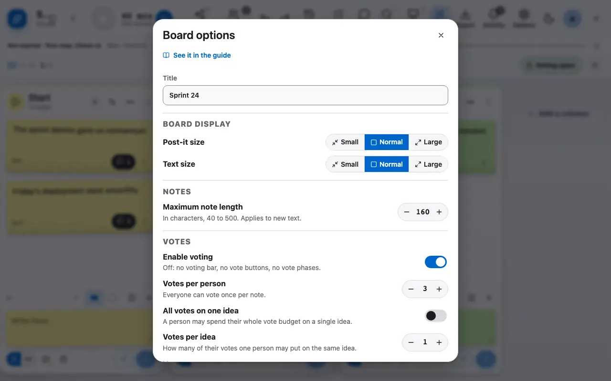
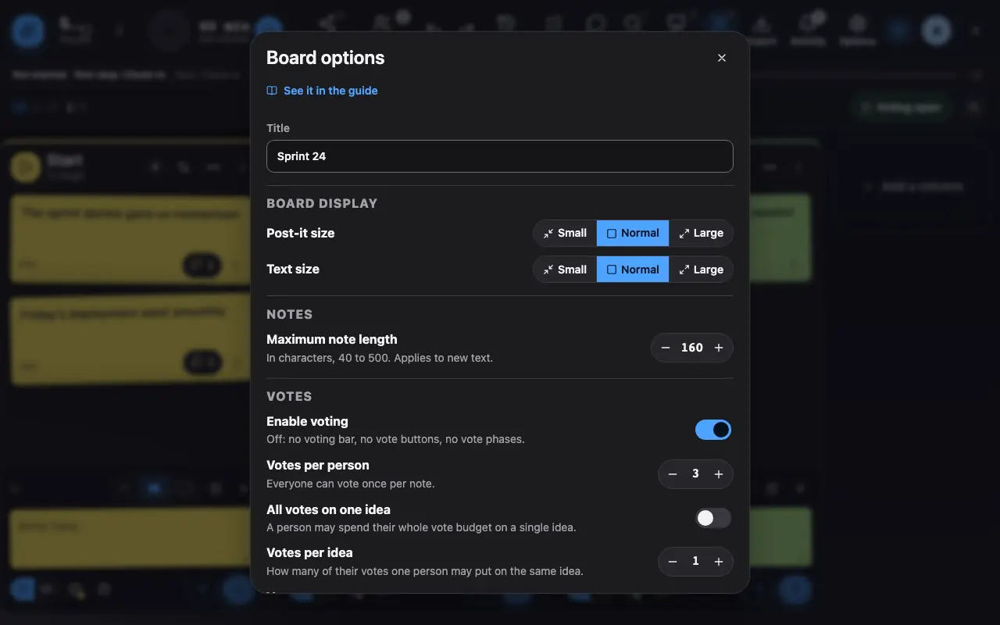

Board options
Votes, lock, roles: everything is set in the options.
1 Options set the votes, the lock and who can facilitate.
The options set the number of votes per person, the lock of the board (no more writing), the visibility of the votes and who can facilitate. Changes are announced to every participant.

